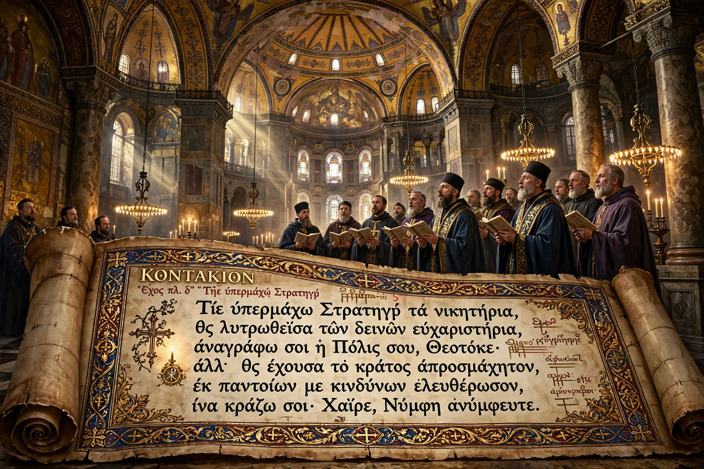

| Kontakion | |
|---|---|
 | |
| Tradition | Eastern Orthodox / Byzantine chant |
| Greatest composer | Romanos the Melodist (6th century) |
A kontakion (Greek κοντάκιον) is a form of Byzantine hymn: originally a long poetic sermon in verse, sung in the Eastern Orthodox Church.
The name is traditionally derived from the rod (kontos) around which the scroll was wound. A classical kontakion comprised a prologue (koukoulion) and 18–30 stanzas (oikoi) linked by a refrain and an acrostic, often dramatising biblical episodes with dialogue. Saint Romanos the Melodist perfected the form in 6th-century Constantinople; the famous Akathist to the Theotokos is closely related.
From the 7th–8th centuries the canon largely replaced the full kontakion in services; today only the prologue and first oikos are usually sung, retaining the name "kontakion" in the Octoechos and festal books.